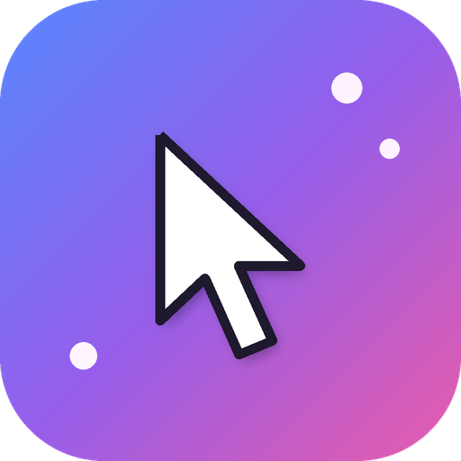

← Magic Cursor · Yathin Looops

Magic Cursor on phone & iPad
No mouse to shake? Shake your phone.
Magic Cursor
Shake your phone or iPad to find your touch spot ✨
Shake
Shake your phone or iPad 3 times quickly. A big glowing cursor pops where you last touched.
Install
Open this page on your phone or iPad, tap Share → Add to Home Screen. On Android, use the Chrome menu → Install app.
Heads up
Works inside the Magic Cursor app only. Phones don't let apps change the pointer everywhere.